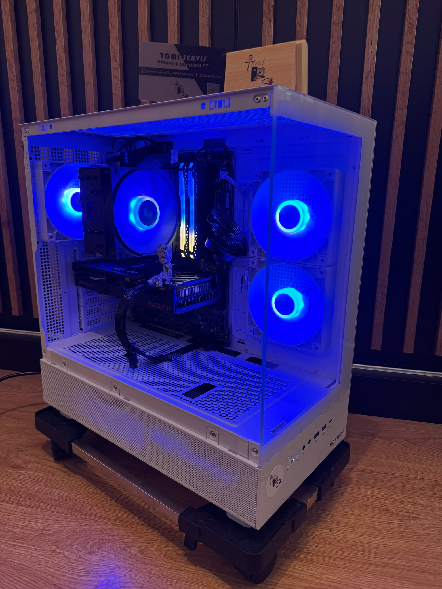

100+
Servisov
50+
Postavených PC
5★
Spokojnosť




Herné PC • Servis • Upgrade
Skladáme výkonné herné zostavy, opravujeme počítače a pomáhame zákazníkom získať maximum z ich techniky.
Zobraziť služby 🖥️ Konfigurátor PCServisov
Postavených PC
Spokojnosť

Skladáme výkonné herné zostavy, opravujeme počítače a pomáhame zákazníkom získať maximum z ich techniky.
Zobraziť služby 🖥️ Konfigurátor PCVysoké teploty, hlučné ventilátory a nižší výkon.
Nižšie teploty, tichší chod a stabilnejší výkon.
Výrazné zníženie teplôt po servise.


Objednajte si profesionálne čistenie ešte dnes.
📞 Objednať čisteniePo čistení a výmene pasty dokáže procesor pracovať aj o 10-20°C chladnejšie.
Prehriaty počítač znižuje výkon. Čistý systém beží plynulejšie.
Ventilátory nemusia bežať na plné otáčky.
Menej prachu znamená menšie opotrebenie komponentov.
od 25€
od 20€
od 10€
individuálne
Kontrola stavu počítača.
Bezpečné rozobratie zostavy.
Odstránenie prachu a nečistôt.
Výmena teplovodivej pasty.
Kontrola teplôt a stability.
Tomikon je technologický projekt zameraný na servis počítačov, skladanie herných PC a predaj príslušenstva.
Kompletné čistenie počítačov a notebookov.
Zníženie teplôt a zvýšenie výkonu.
Inštalácia systému a ovládačov.
Skladanie zostáv na mieru.


Väčšina opráv do 24 hodín.
PC zostavené na mieru podľa rozpočtu.
Po servise vždy testujeme stabilitu.
Osobný prístup ku každému zákazníkovi.